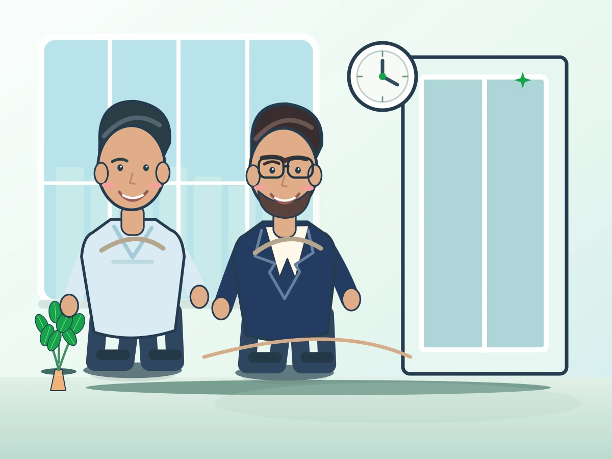
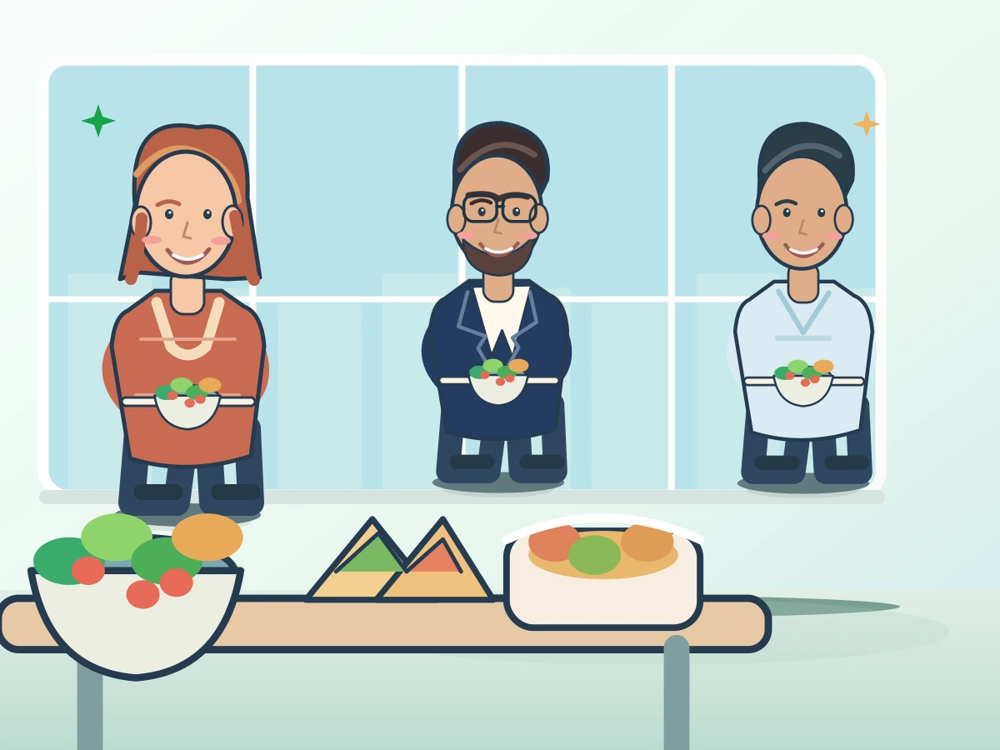
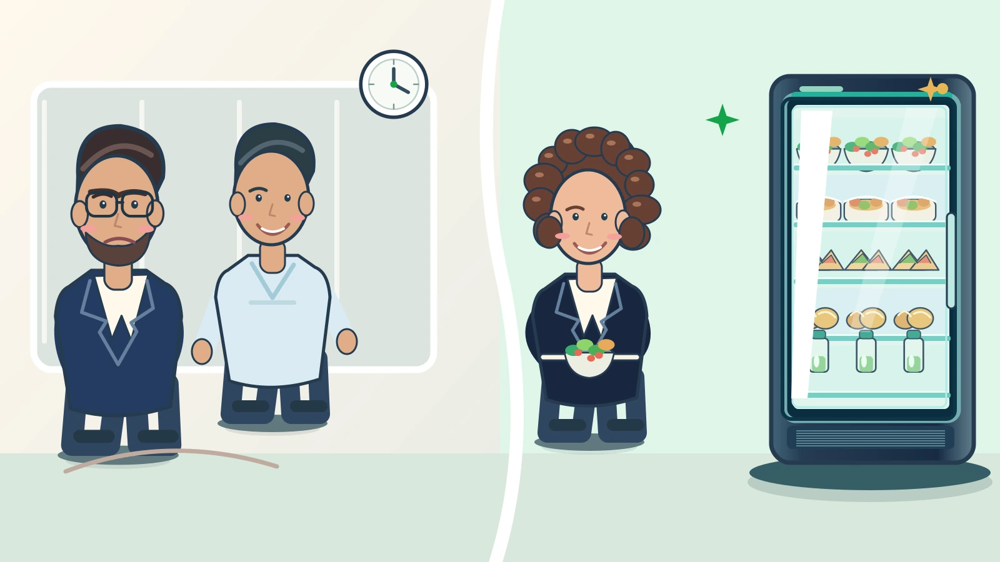
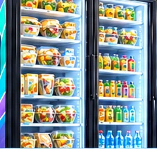
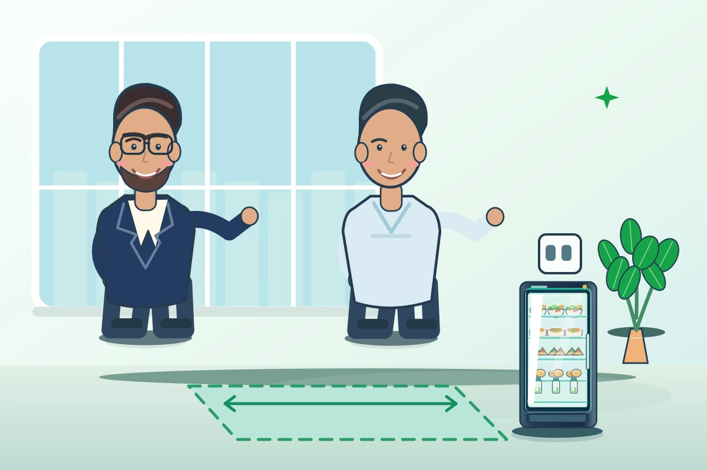

Тольятти и область
Ставим в вашей компании умный холодильник с салатами, горячим, сэндвичами и напитками. Сами возим, наполняем и списываем просрочку.


Сотрудники не покидают рабочее место: ежедневно экономят от 30 до 60 минут.
Нет походов в кафе и ожидания доставки, меньше потерянного рабочего времени.
Забота о питании сотрудников заметна каждый день.
Современный офис, в котором есть умный холодильник с готовой едой.
Люди остаются без нормальной еды, когда столовая закрыта.
Производство, склад, парк: до ближайшего обеда десять минут пешком и обратно.
Забота о сотрудниках, которая заметна каждый день и не требует бюджета на компенсации.
Автосервис, клиника, салон: посетителям тоже есть чем перекусить на месте.
Оставляете телефон и адрес. Перезваниваем в рабочее время.
Смотрим, где поставить: нужны свободный метр и розетка.
Привозим и подключаем холодильник, показываем сотрудникам, как покупать: оплата в приложении по QR-коду.
Возим свежее по графику, следим за сроками и списываем то, что не продалось.

Ассортимент подбираем по продажам вашей точки и меняем по графику поставок.


Холодильник не заменяет столовую: в нём готовые блюда, которые можно взять в любое время, в том числе когда столовая закрыта.
Мы. Свежее возим по графику, срок годности 3 дня, проверяем остатки и списываем всё, что не продалось.
Место примерно 1 × 1 метр и розетка 220 В. Уточнить: интернет, доступ курьера.
Установка и обслуживание бесплатны. От компании только компенсация электроэнергии 500–750 ₽, а за размещение возможна выплата аренды.
Уточнить: порог и условия, при которых забираем холодильник.
В приложении по QR-коду на холодильнике.
Оставьте контакты, расскажем условия и подберём место.